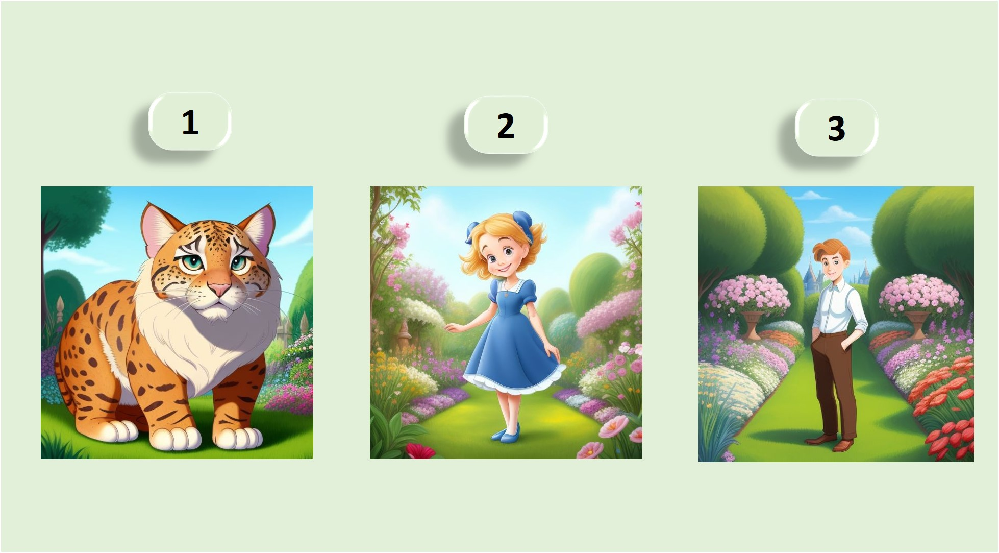
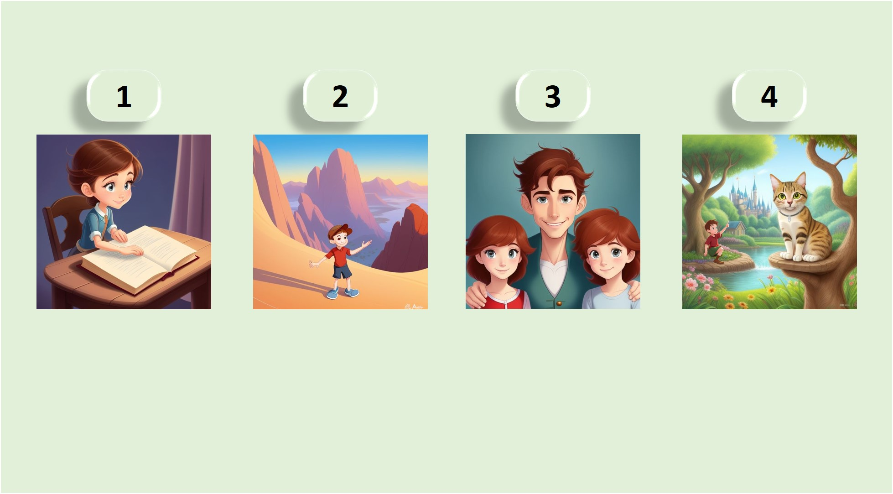

Lesson 6 Title: Describing People and Things Subtitle: Lesson 6 Presented by: Fatima Contact Information: blackboarder1@gmail.com
Welcome to our A1 English Course!
Today, we are going to learn how to describe people and things.
We will focus on ◦
adjectives for physical descriptions, ◦
how to use the verb 'to be' with adjectives, and ◦
how to use demonstrative pronouns like 'this, that, these, those.'
Let's get started!
Objectives
• Learn adjectives for physical descriptions
• Use the verb "to be" with adjectives
• Understand and use demonstrative pronouns
Adjectives for Physical Descriptions
Let’s start by learning some adjectives to describe people and things.
Adjectives are words that tell us more about a noun, like how something looks.
Tall ◦ Short:
She is tall. He is short.
Old ◦ Young:
My grandfather is old. My sister is young.
Big ◦ Small:
The car is big. The book is small.
Beautiful ◦ Ugly:
The flower is beautiful. The monster is ugly.
Long ◦ Short (for hair):
She has long hair. He has short hair.
Thin ◦ Fat:
The cat is thin. The dog is fat.
Happy ◦ Sad:
The child is happy. The man is sad.
Exercise:
Look at the pictures and choose the correct adjective to describe each one.
Using "To Be" with Adjectives
Now that we know some adjectives, let’s learn how to use the verb 'to be' with them.
We use 'to be' to connect the subject of a sentence with an adjective.
I am tall.
I + am + adjective
You are short.
You + are + adjective
We are young
We + are + adjective
They are old
They + are + adjective
He is tall.
He + is + adjective
She is short.
She + is + adjective
It is old
It + is + adjective
Exercise:
Complete the sentences with the correct form of 'to be':
1. She ___ beautiful. 2. They ___ happy. 3. I ___ tired.
Practice with "To Be" and Adjectives
Let’s practice using 'to be' with adjectives in different sentences.
Describe the people or things in the pictures using the correct form of 'to be' and an adjective.
◦ The dog is small.
◦ They are young.
◦ He is tall.
Exercise:
Look at the pictures and write sentences using 'to be' and the correct adjective:

Demonstrative Pronouns
Next, we will learn how to use demonstrative pronouns: this, that, these, those.
These words help us point out specific people or things.
This (singular, near):
This is my book.
That (singular, far):
That is your car.
These (plural, near):
These are my friends.
Those (plural, far):
Those are your shoes.
Explanation:
Use this for one thing that is close to you.
Use that for one thing that is far from you.
Use these for more than one thing that is close to you.
Use those for more than one thing that is far from you.
Exercise:
Choose the correct demonstrative pronoun for each sentence:
1. ___ is my pen. (near) 2. ___ is her house. (far) 3. ___ are your books. (near) 4. ___ are their bags. (far)
Using Demonstrative Pronouns in Sentences
Now, let’s practice using demonstrative pronouns in sentences.
We’ll use this, that, these, and those to talk about specific people and things.
This is my brother. That is a big tree. These are my shoes. Those are her toys.
Exercise:
Write sentences using the correct demonstrative pronoun and noun:

1. (Picture of a close book) ___ is a book. 2. (Picture of distant mountains) ___ are mountains. 3. (Picture of close children) ___ are children. 4. (Picture of a distant cat) ___ is a cat.
Describing People and Things: Putting It All Together
Now that we’ve learned how to describe people and things using adjectives, the verb 'to be,' and demonstrative pronouns, let’s put it all together.
This is my sister. She is young and has long hair.
That is a beautiful house. It is big and has a garden.
These are my books. They are old but interesting.
Those are your shoes. They are new and black.
Exercise:
Write a short description of the following:
1. Your friend 2. Your favorite object 3. A group of people
Examples:
1. This is my friend.
He is tall and friendly.
1. This is my friend.
She is tall and has long hair.
2. That is my favorite toy.
It is small and colorful.
2. That is my bike.
It is red and fast.
3. These are my classmates.
They are smart and funny.
3. These are my parents.
They are kind and hardworking.
Listening Practice
Let’s listen to someone describing people and things.
Pay attention to how they use adjectives, the verb 'to be,' and demonstrative pronouns.
Exercise:
After listening, answer these questions:
1. What color is the dog? 2. What size is the house? 3. What are the books like? 4. How are the neighbors described?
Review and Practice
Let’s review what we have learned today and do some practice exercises.
Complete the sentences with the correct adjective, form of 'to be,' or demonstrative pronoun:
1. She ___ beautiful. 2. ___ are my new shoes. 3. The cat is ___ . 4. ___ is my teacher.
Great job today! For homework, write a short paragraph describing a person or thing.
Use at least three adjectives, the verb 'to be,' and demonstrative pronouns.
Example:
This is my cat. He is small and white. That is his favorite toy. It is red and round. These are his friends. They are also cats and they are very playful.
Thank you for your participation today!
We will continue learning more in our next class.
Goodbye!